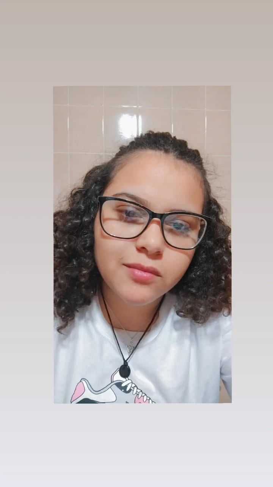

Tatiane Neves Baraldi
Desenvolvedora Front-end Júnior


Sobre
Oiee meu nome é Tatiane Neves Baraldi, seja bem-vindo(a)! Sou uma pessoa se apaixonou pela programação durante a pandemia da COVID-19, fui vendo alguns videos sobre e quando vi comecei a estudar Analise e desenvolvimento de sistemas pela Universidade Anhembi Morumbi e por fora da faculdade tambem estudei HTML, CSS e JavaScript, para poder me tornar uma desenvolvedora focada em front-end. Meus principais hobbies são jogar, ver séries e ficar com os meus bichinhos de estimação.